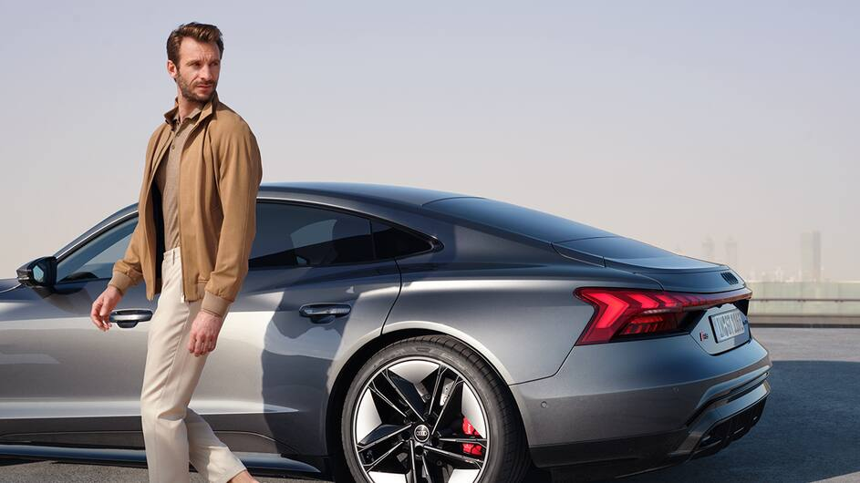
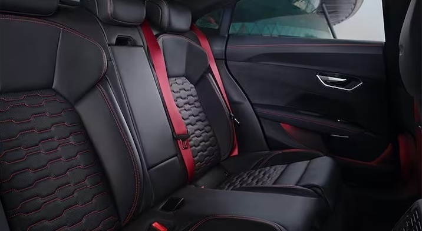

Audi
RS e-tron GT

Energia pura e desempenho progressivo.
Exterior
-

Um estilo próprio transparece nos pontos-chave do Audi RS e-tron GT. Exemplo disso é o baixo centro de gravidade.
Ver mais -

O design escultural do Audi RS e-tron GT combina as proporções dinâmicas de um gran turismo com as características inconfundíveis da linha Audi RS.
Ver mais -
No espírito de um gran turismo, a suspensão a ar adaptativa de alta tecnologia oferece conforto, esportividade e usabilidade para o dia a dia.
Ver mais
Interior
-

O cockpit minimalista, com sua tela de 12,3 polegadas e 100% digital, assim como o console central, são ergonomicamente pensados para o conforto do motorista.
Ver mais -

O caráter esportivo do Audi RS e-tron GT fica ainda mais evidente com o seu banco traseiro com capacidade para três passageiros e muito espaço, no banco central possiu descansa.
Ver mais -

Os bancos dianteiros esportivos RS Pro vão lhe oferecer um bom suporte lateral mesmo quando seu Audi RS e-tron GT estiver dando curvas em alta velocidade.
Ver mais